업무 내비게이터 사용 설명서
예시 업무(징계처분 · 물품 구매 계약 · 감찰조사)로, 업무를 만들고 → 일하고 → 나누어 맡기고 → 공유하고 → 레퍼런스로 남기고 → 보관하는 흐름 순서로 설명합니다.
사진의 주황 테두리가 그 단계에서 누르거나 볼 곳입니다. (AI 기능은 이 설명서에서 다루지 않습니다.)
시작하기 — 하루의 시작
업무 내비게이터는 업무를 「단계 → 할 일」 체크리스트로 만들고, 일하면서 조치결과·업무팁·서식·참고 자료를 쌓아 조직의 자료로 남기는 프로그램입니다. 프로그램을 열면 먼저 오늘 챙길 것부터 보여 줍니다.
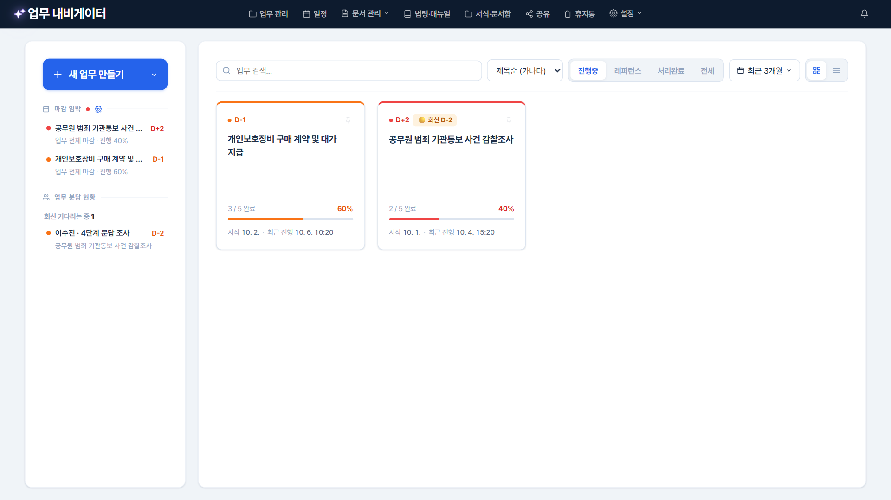
- 왼쪽 위 [새 업무 만들기]를 누르면 바로 만들기 창이 열립니다(옆 ▾는 업무 가져오기 등 다른 방법). 가운데에는 업무 카드가 놓이고, 위쪽 탭으로 진행중 · 레퍼런스 · 처리완료 · 전체를 골라 봅니다.
- 업무는 기본으로 최근 진행순 — 최근에 체크한 업무와 방금 만들거나 복사·가져온 업무가 맨 위에 옵니다. 정렬을 바꾸면 다음에 켤 때도 그대로입니다. 검색·정렬 줄은 아래로 내려도 위에 고정되고, 목록형(오른쪽 ☰)에서는 제목 줄(제목·진행률·마감일·최근 진행)을 눌러 정렬합니다.
- 마감 임박: 기한이 지났거나(빨강 D+2) 곧 다가오는(주황 D-1) 업무가 급한 순서로 모입니다. 누르면 그 업무가 바로 열립니다. 업무 전체 마감뿐 아니라 항목(할 일) 마감도 함께 올라옵니다.
- 업무 분담 현황 — 회신 기다리는 중: 동료에게 맡기고 아직 회신을 받지 못한 단계가 「담당자 · 단계 · 회신 기한」으로 보입니다.
- 카드 위쪽에도 마감(D-1, D+2)과 「회신 D-2」 표시가 붙어, 목록만 보고도 급한 일을 알 수 있습니다.
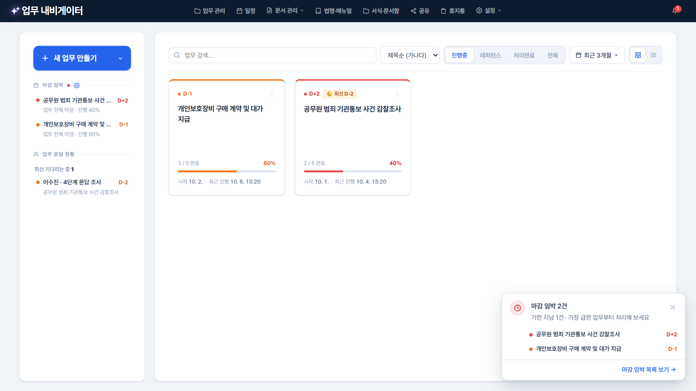
- 프로그램을 켜면 하루 한 번 화면 가운데에 마감 임박 알림이 뜹니다(중요한 알림이라 놓치지 않게). 「기한 지남 1건 · 오늘 마감 1건」처럼 요약하고 급한 업무부터 5건까지 보여 줍니다. [닫기]·바깥 누르기·Esc로 닫습니다.
- 업무 이름을 누르면 그 업무가 열리고, [마감 임박 목록 보기 →]는 진행중 목록을 마감 순으로 보여 줍니다.
- 사이드바 「마감 임박」 옆 ⚙에서 알림 방식(하루 한 번 · 프로그램 열 때마다 · 끄기)을 정합니다.
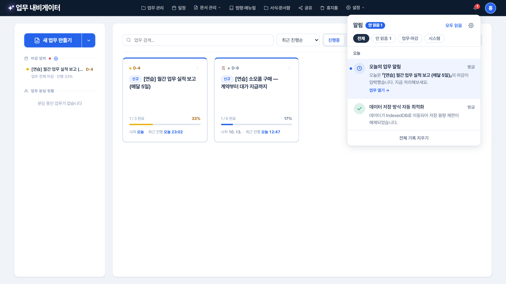
- 맨 위 오른쪽 🔔를 누르면 알림 센터가 열립니다. 지나간 마감 알림과 시스템 알림을 다시 볼 수 있습니다.
- 전체 · 안 읽음 · 업무·마감 · 시스템으로 나누어 보고, 모두 읽음으로 빨간 숫자를 지웁니다.
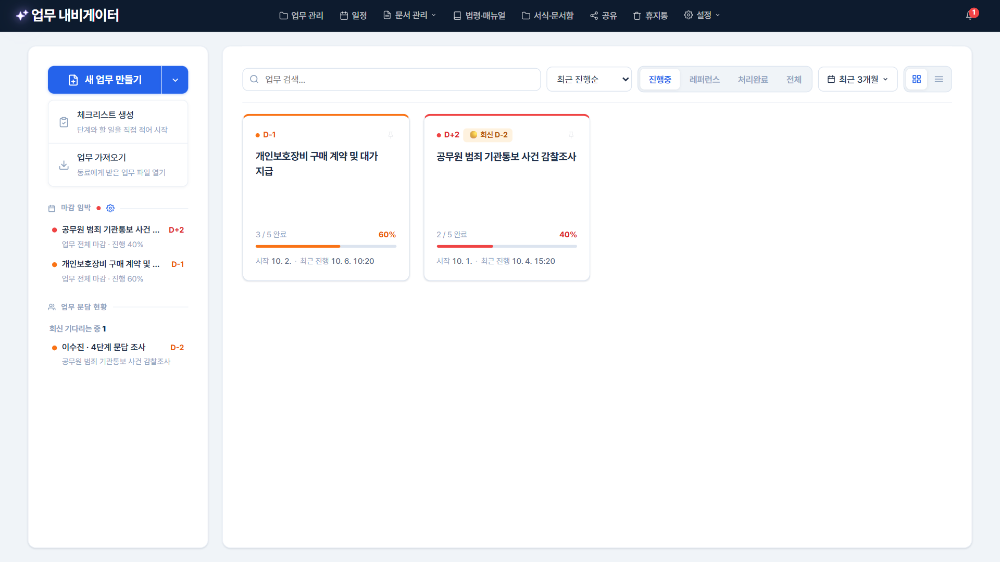
- 체크리스트 생성: 단계와 할 일을 직접 적어 시작합니다.
- 업무 가져오기: 동료에게 받은 업무 파일(.json)을 엽니다. 이어서 할지, 체크를 비우고 새로 시작할지 고를 수 있습니다.
1. 새 업무 만들기 (4단계)
예시: 소방장 품위유지의무 위반 징계처분. 이름 → 절차 → 업무팁·서식 → 참고 자료 순서로 만듭니다. ③·④는 건너뛰고 [바로 시작]해도 됩니다. 쓰는 중에 창을 닫으면 임시 저장되어 다음에 이어서 쓸 수 있습니다.
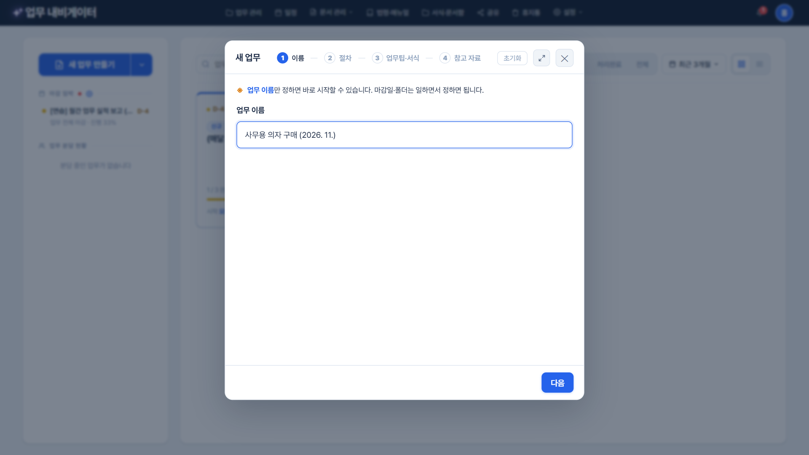
- 업무 이름만 적으면 바로 시작할 수 있습니다. 마감일·폴더는 일하면서 정해도 됩니다.
- Enter를 누르면 다음 단계로 넘어갑니다.
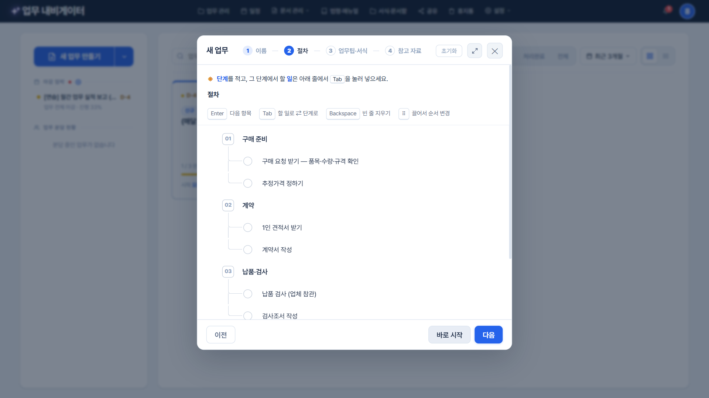
- 단계(번호 네모 01·02…)를 적고, 그 단계에서 할 일(동그라미)은 아래 줄에서 Tab을 눌러 넣습니다. 일하는 화면과 같은 모양입니다.
- 예: 01 징계 의결 요구 → 02 징계위원회 개최 준비 → 03 심의·의결 → 04 징계 처분 → 05 종결
- Enter 다음 줄 · Tab 할 일 ↔ 단계 · Backspace 빈 줄 지우기 · ⠿를 끌어 순서 바꾸기
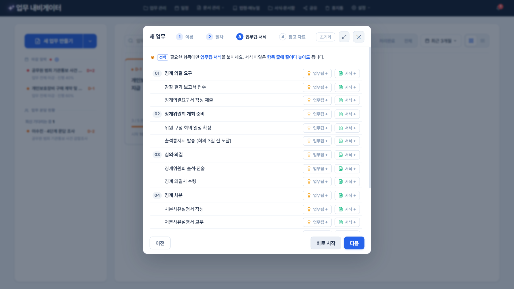
- 필요한 항목에만 업무팁· 서식을 붙입니다. 누르면 항목 창이 그 탭으로 열립니다(같은 아이콘).
- 서식 파일은 항목 줄에 끌어다 놓아도 그 항목의 서식으로 연결됩니다 (서식·문서함에도 저장).
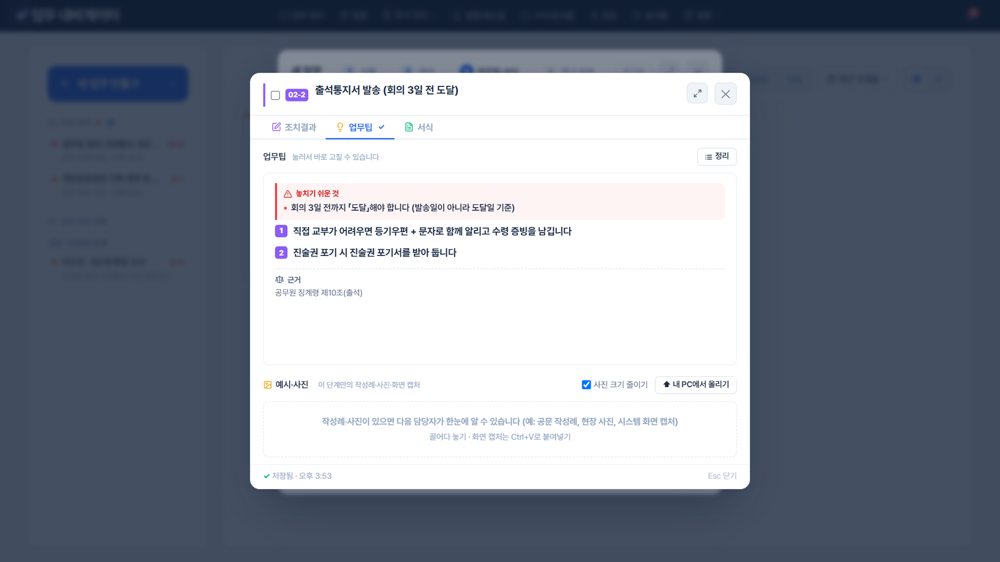
- 항목 창의 업무팁 탭에 노하우를 적습니다. 탭은 일하는 화면 버튼·오른쪽 클릭 메뉴와 같은 아이콘·색입니다( 조치결과 · 업무팁 · 서식). 「1. 2. 3.」으로 쓰면 번호 목록으로 보입니다.
- 업무팁은 세 칸으로 나눠 보입니다. 입력칸 위 [⚠ 놓치기 쉬운 것]을 누르면 지금 줄이 맨 위 빨간 상자로, [근거]를 누르면 맨 아래 「근거」(법령 조문·지침)로 갑니다(한 번 더 누르면 풀림). 나머지 줄은 가운데 「순서」입니다.
- 예: 「⚠ 회의 3일 전까지 도달해야 합니다 (발송일이 아니라 도달일 기준)」 — 다음 담당자가 같은 실수를 하지 않게 맨 위에 둡니다.
- 저장 버튼이 없습니다 — 고치면 바로 저장되고, 아래에 「✓ 저장됨」이 표시됩니다.
- 어디에 적느냐: 할 일 모두에 같이 필요한 것(예: 「피의자 신문」의 권리 고지)은 단계에 한 번만 적으면 그 단계의 할 일 모두에 「단계 공통」으로 보입니다. 한 할 일에만 필요한 것은 그 할 일에 적습니다. 따로 설정할 것은 없습니다. 할 일 창 맨 위에 「단계 공통 업무팁도 함께 보입니다」 안내가 나오고, 같은 내용을 또 적었으면 [여기 같은 내용 지우기]가 나옵니다.
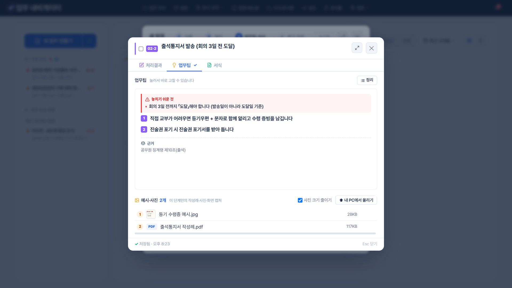
- 업무팁 탭 아래 예시·사진에 이 단계만의 작성례·현장 사진·시스템 화면 캡처를 넣습니다. [⬆ 내 PC에서 올리기] · 끌어다 놓기 · 화면 캡처는 Ctrl+V로 바로 붙여넣기. 누르면 미리보기가 열리고 ← →(또는 ‹ ›)로 넘겨 봅니다 — 창은 그대로이고 내용만 바뀝니다.
- 구분: 채워서 쓰는 빈 양식은 [서식] 탭(서식·문서함에서 연결) · 「이렇게 하면 된다」는 작성례·사진은 업무팁 — 서식·문서함에 한 번 쓰고 말 예시가 쌓이지 않습니다.
- 예시·사진은 노하우라서 공유·내보내기·레퍼런스 사본에도 함께 갑니다 (조치결과 첨부는 레퍼런스에 복사되지 않음).
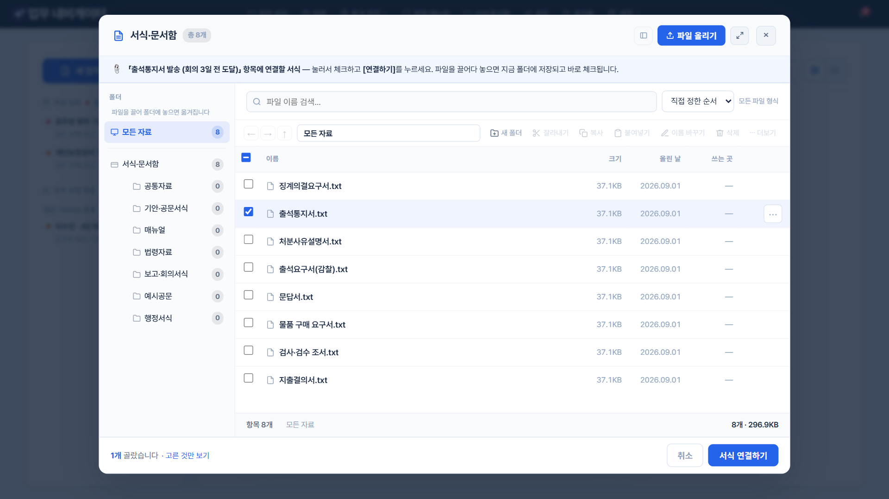
- 🗂 서식·문서함에서 고르기를 누르면 서식·문서함 창이 고르기 모드로 열립니다.
- 줄을 눌러 체크하고 [서식 연결하기]를 누릅니다. 두 번 누르면 미리보기, Shift+클릭으로 범위 고르기.
- 창에 파일을 끌어다 놓으면 지금 폴더에 저장되고 바로 체크됩니다.
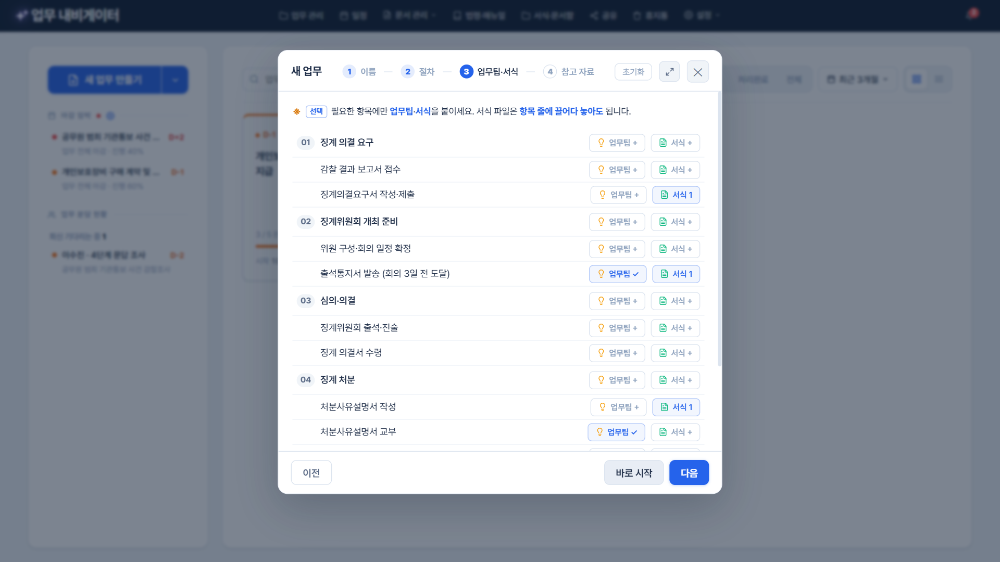
- 붙인 항목은 「업무팁 ✓ · 서식 1」처럼 버튼에 표시됩니다. 징계의결요구서·출석통지서·처분사유설명서를 각 항목에 연결한 모습입니다.
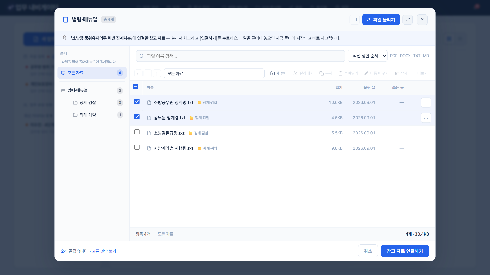
- 업무 전체에서 참고할 법령·지침·공문을 📚 법령·매뉴얼에서 고르기로 고릅니다. 예: 소방공무원 징계령 · 공무원 징계령
- 아래 [참고 자료 연결하기]를 누르면 연결됩니다.
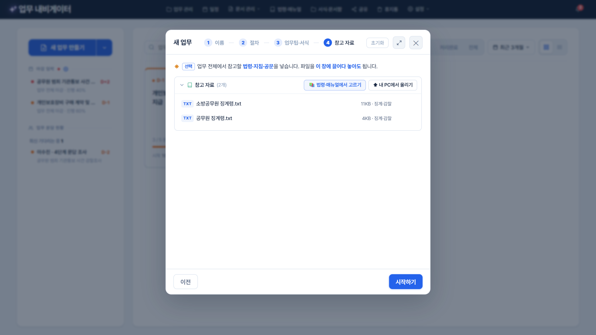
- 연결한 자료가 목록에 보입니다. ⬆ 내 PC에서 올리기로 새 파일을 넣을 수도 있습니다 (법령·매뉴얼에도 저장).
- [시작하기]를 누르면 업무가 만들어지고 일하는 화면이 열립니다.
2. 일하는 화면
체크하고, 조치결과를 적고, 자료를 보며 일합니다. 오른쪽 「업무 절차」에는 지금 할 일과 그 업무팁·서식이 함께 보입니다.
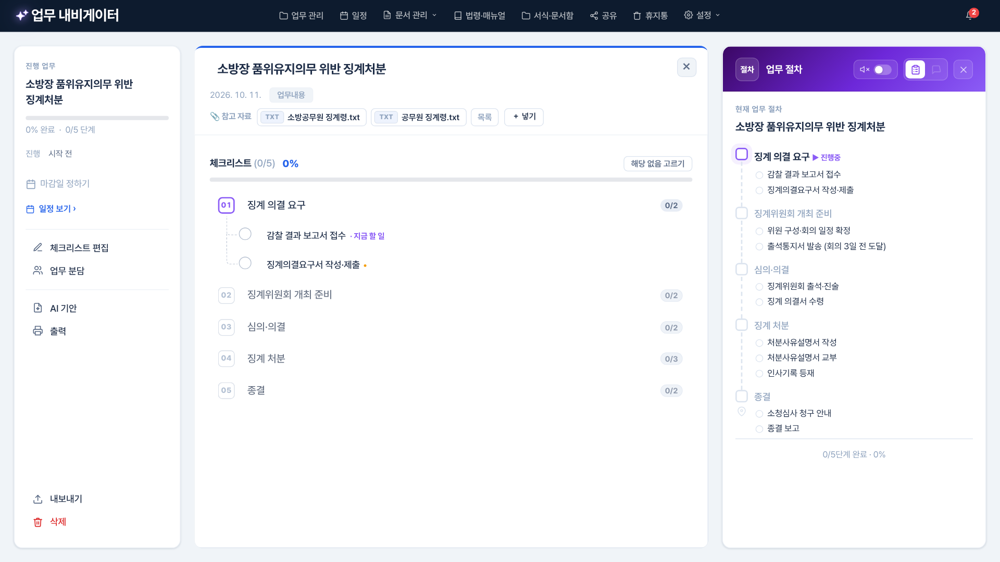
- 왼쪽: 진행률·마감일·일정 보기, 체크리스트 편집·업무 분담·출력·내보내기
- 가운데: 참고 자료 칩(한 줄)과 체크리스트. 단계는 번호 네모, 할 일은 동그라미입니다. 지금 단계만 펼쳐지고 나머지는 접혀 있습니다.
- 오른쪽: 업무 절차 — 전체 흐름과 지금 하는 단계, 「지금 할 일」의 업무팁·서식. 맨 위 「✓ 완료 4/8단계 ▾」 줄은 스크롤해도 늘 보이고, 누르면 끝난 단계가 펼쳐집니다. 단계를 끝내면 가운데 목록과 함께 한 번에 다음 단계로 넘어갑니다.
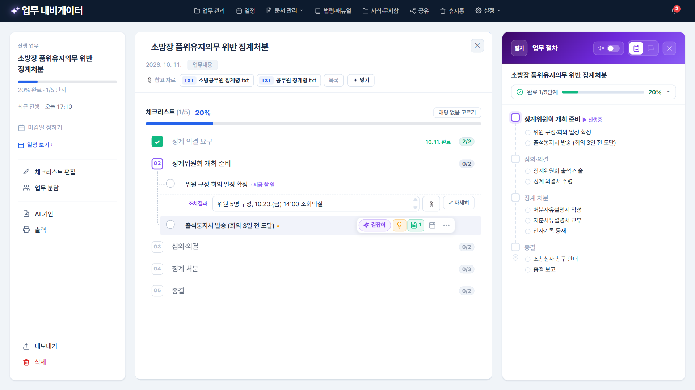
- 동그라미를 누르면 체크됩니다. 단계의 할 일을 모두 끝내면 단계 네모가 초록 ✓로 채워지고 완료 날짜가 남습니다.
- 줄을 한 번 누르면 조치결과 한 줄 입력칸이 열립니다. Enter는 저장하고 다음 할 일로, Esc는 닫기.
- 평소에는 줄마다 제목과 꼭 필요한 것만 한 줄로 보입니다. 단계 오른쪽 「1/2」는 끝낸 할 일 수(다 끝나면 초록)이고, 누르면 할 일을 펼치거나 접습니다. 날짜는 끝난 줄이면 완료 날짜, 마감일을 정한 줄이면 D-n입니다. 업무팁·서식이 있는 줄은 제목 뒤에 작은 점(•)이 붙습니다.
- 줄에 마우스를 올리면 오른쪽 날짜 자리에 길잡이 · 업무팁 · 서식 · 마감일 · 버튼이 나옵니다. 내용이 들어 있는 버튼은 색(업무팁 주황 · 서식 초록 · 마감일 파랑)으로, 없는 버튼은 연한 회색 선으로 보입니다. 는 오른쪽 클릭 메뉴와 같습니다.
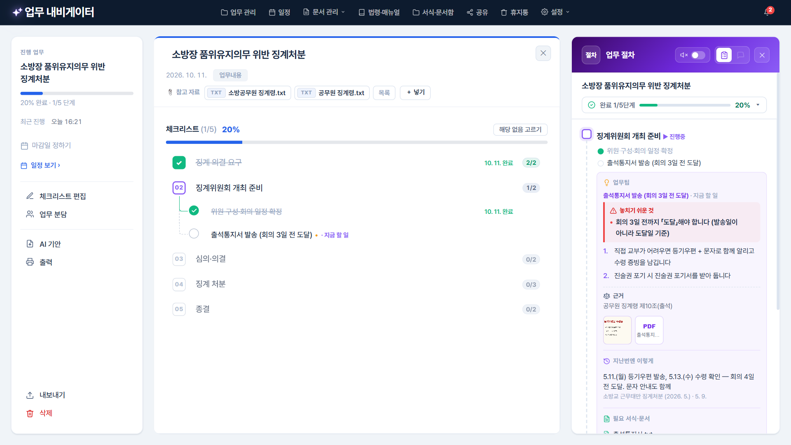
- 오른쪽 업무 절차의 업무팁은 세 칸으로 보입니다: 맨 위 놓치기 쉬운 것(빨간 상자) · 가운데 순서 · 맨 아래 근거. 길면 가운데 순서만 줄여 보이고, 놓치기 쉬운 것과 근거는 늘 다 보입니다.
- 「지난번엔 이렇게」: 다른 업무(처리완료 등)에서 같은 이름의 항목에 남긴 조치결과가 최근 것부터 2개 나옵니다. 누르면 그때의 항목 창이 열려 첨부한 증빙까지 볼 수 있습니다(레퍼런스·휴지통 업무는 빼고 찾음).
- 오른쪽 업무 절차의 업무팁 아래에 예시·사진 썸네일이 한 줄로 보입니다 (넘치면 +N). 사진은 그림으로, PDF·한글은 형식 타일로.
- 누르면 미리보기가 열리고, 여러 개면 ‹ › 버튼이나 ← → 키로 넘겨 봅니다.
- 줄에 마우스를 올려 나온 업무팁 버튼 위에 마우스를 두면 「업무팁 · 예시 2」처럼 개수가 보입니다.
- 「필요 서식·문서」의 이름을 누르면 바로 미리보기가 열리고, 마우스를 올리면 나오는 ⬇로 내려받습니다(미리보기가 안 되는 형식은 바로 내려받기).
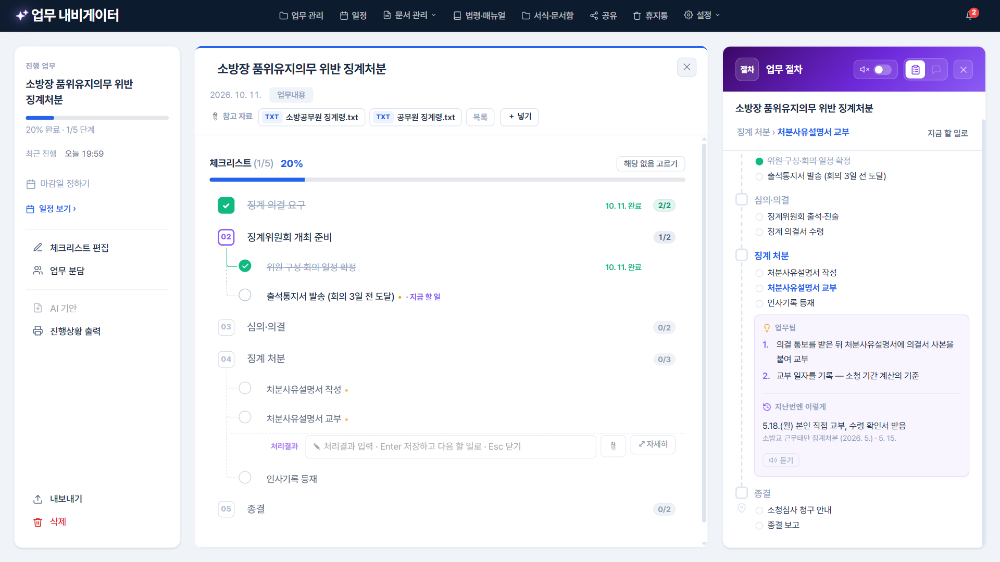
- 체크리스트에서 줄을 한 번 누르면 오른쪽 업무 절차에서 그 항목이 제자리에서 펼쳐져 업무팁·서식이 보입니다. 다음 단계에 필요한 서식을 미리 내려받아 두는 등 준비할 때 씁니다.
- 맨 위 「완료」 줄 자리가 고른 항목 이름 한 줄로 바뀌고, 그동안 지금 할 일의 상자는 접혀 있어 상자가 하나만 보입니다. 끝난 단계의 항목을 골라도 접힌 「완료」에서 펼쳐집니다.
- 한 줄 오른쪽 지금 할 일로를 누르거나 같은 줄을 다시 누르면(또는 Esc) 원래대로 지금 할 일이 펼쳐집니다.
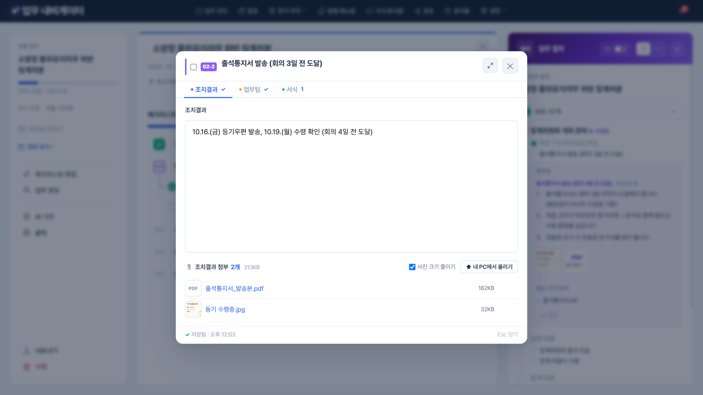
- 줄을 두 번 누르면 항목 창이 열립니다 (조치결과·업무팁·서식).
- 예: 「10.16.(금) 등기우편 발송, 10.19.(월) 수령 확인 (회의 4일 전 도달)」 + 발송본 PDF·등기 수령증 사진 — 절차를 지켰다는 증빙이 그 항목에 함께 남습니다.
- 제목 옆 번호: 단계는 「02」, 할 일은 「02-2」.
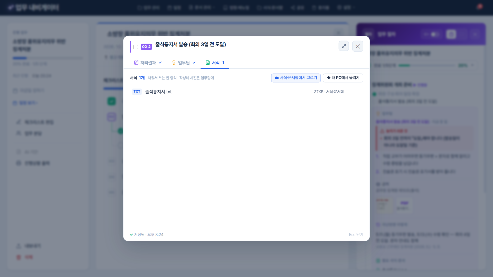
- 서식 탭에는 채워서 쓰는 빈 양식을 둡니다 (작성례·사진은 업무팁의 예시·사진에).
- 연결한 서식을 누르면 미리보기, 마우스를 올리면 ⬇ 내려받기·✕ 빼기, 끌어서 순서 바꾸기.
- 오른쪽 클릭: 보기 · 내려받기 · 위로/아래로 · 서식·문서함에서 위치 보기 · 🖼 업무팁 예시로 옮기기 · 빼기 — 예전에 서식에 넣어 둔 예시를 업무팁으로 옮길 때 씁니다(서식·문서함의 원본은 그대로).
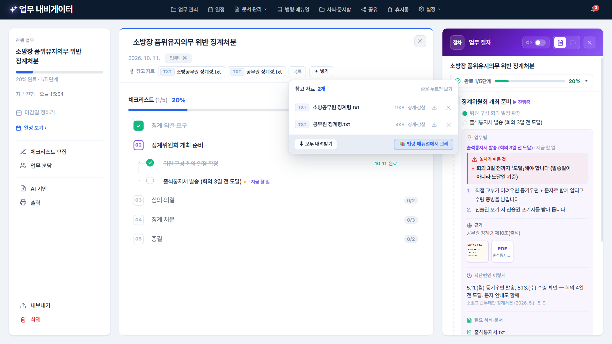
- 제목 아래 참고 자료 칩은 늘 한 줄입니다 (2개 + 「+N개」·「목록」).
- 누르면 떠 있는 목록: 줄 누르기 = 보기 · ⬇ 내려받기 · ✕ 빼기 · [⬇ 모두 내려받기] · [📚 법령·매뉴얼에서 관리]
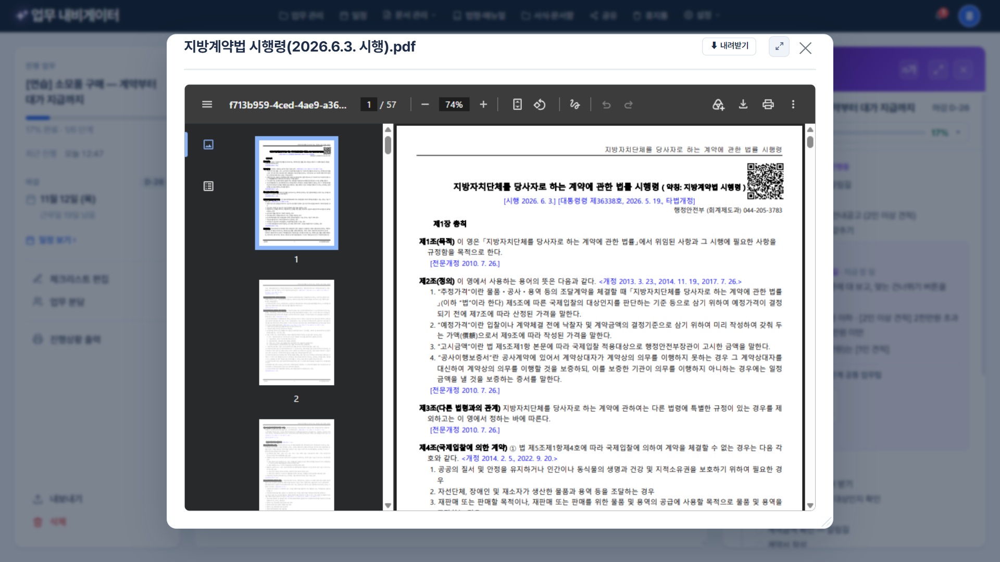
- PDF·한글(HWPX)·워드·사진·텍스트를 프로그램 안에서 봅니다.
- 위쪽 [⬇ 내려받기]로 바로 저장 · 오른쪽 아래 모서리를 끌어 크기 조절(기억됨) · ⤢ 전체 화면
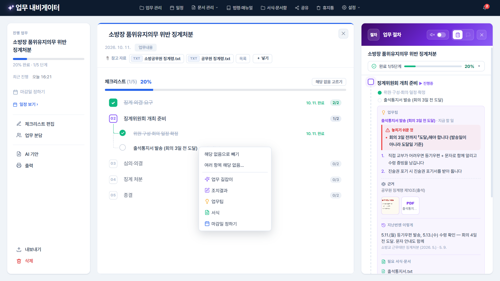
- 해당 없음으로 빼기: 이번 업무에서 할 필요 없는 항목을 뺍니다 (되살리기 가능).
- 업무 길잡이 · 조치결과 · 업무팁 · 서식 · 마감일 정하기 — 마우스를 올리면 나오는 버튼 줄( · · · )과 같은 순서·같은 아이콘이고, 버튼 줄의 를 눌러도 이 메뉴가 열립니다.
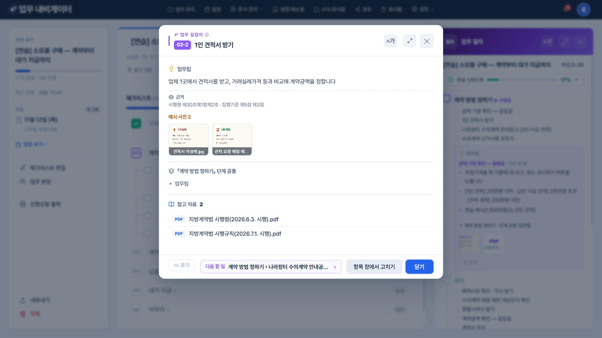
- 줄에 마우스를 올려 길잡이를 누르거나, 오른쪽 클릭 → 업무 길잡이를 고르면 그 항목에 필요한 것이 묶음별로 모여 나옵니다: 업무팁(글 + 예시·사진 썸네일) · 서식(파일 카드) · 참고 자료. 비어 있는 묶음은 보이지 않습니다.
- 할 일의 길잡이에는 그 할 일 것 아래에 「단계 공통」 묶음(단계에 적은 업무팁·서식)이 함께 나옵니다. 할 일에 자기 것이 있으면 한 줄로 접혀 있고, 누르면 펼쳐집니다.
- 누르면 바로: 예시 썸네일 = 미리보기(← → 넘기기) · 서식 카드 = 미리보기, ⬇ = 내려받기, 2개 이상이면 [⬇ 모두 내려받기] · 참고 자료 = 서식과 같은 카드(긴 이름은 2줄까지 …, 마우스를 올리면 전체 이름), 누르면 미리보기. 오른쪽 위 ⤢(또는 제목 줄 두 번 누르기)로 전체화면 — 다음에 열면 다시 기본 크기
- 아래 버튼 줄의 「다음 할 일 ›」(내용이 길어도 늘 보임)을 누르면 다음 할 일의 길잡이로 넘어갑니다(할 일이 딸린 단계는 건너뛰고 「단계 › 할 일」로 표시, 마지막 할 일에서는 나오지 않음). [항목 창에서 고치기]로 업무팁·예시·서식을 바로 고칩니다. 🔈 듣기·자동읽기로 소리로 들을 수도 있습니다.
3. 체크리스트 편집
구조를 바꾸는 화면입니다 (추가·삭제·위치·단계↔할 일·이름·건너뛰기). 탐색기·엑셀처럼 한 번 클릭 = 고르기, 두 번 클릭 = 이름 바꾸기입니다. [저장]을 눌러야 반영됩니다.
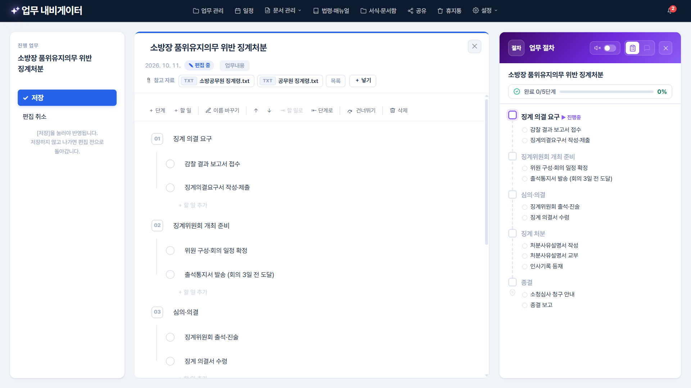
- 왼쪽 [체크리스트 편집]을 누릅니다. 줄을 한 번 누르면 고르기(파란 바탕), 두 번 누르면 이름 바꾸기(흰 입력칸)입니다.
- 고른 뒤 위 명령 줄: ＋ 단계 · ＋ 할 일 · 이름 바꾸기 · ↑ ↓ · 할 일로 · 단계로 · 건너뛰기 · 삭제 — 오른쪽 클릭 메뉴도 같은 명령·같은 순서입니다 (메뉴에는 잘라내기·복사·붙여넣기 추가).
- 끌어서 옮기기 · F2 이름 바꾸기 · Insert 아래에 새 줄 · Alt+Shift+↑↓ 위치 · Tab/Shift+Tab 할 일↔단계 · Delete · Ctrl+Z
- 이름을 적지 않은 새 줄은 다른 곳을 누르면 저절로 지워지고, 이름을 다 지우고 나가면 원래 이름으로 돌아갑니다.
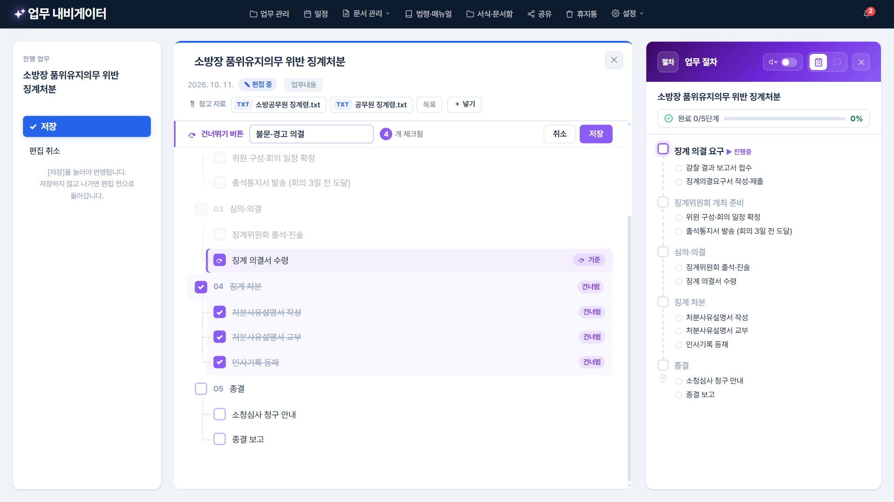
- 갈림길이 되는 줄을 고르고 [⤼ 건너뛰기]를 누릅니다 (오른쪽 클릭 → 건너뛰기…도 같음). 창이 따로 뜨지 않고 체크리스트가 고르기 모드로 바뀝니다.
- 맨 위 칸에 버튼 이름(예: 불문·경고 의결)을 적고, 아래 목록에서 건너뛸 항목을 체크합니다. 단계를 체크하면 그 할 일도 함께 체크됩니다. 기준 줄보다 앞의 줄은 고를 수 없습니다.
- Enter 또는 [저장] = 만들기 · Esc 또는 [취소] = 그만두기
- 이미 버튼이 있는 줄에서 [건너뛰기]나 줄의 알약을 누르면 작은 메뉴가 열립니다: 버튼 이름(누르면 건너뛸 항목 고치기·🗑 지우기) · 새 건너뛰기 버튼
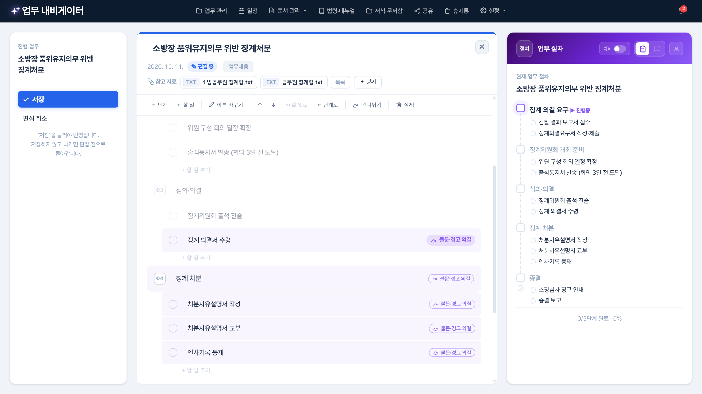
- 버튼이 있는 줄은 채운 알약 「⤼ 불문·경고 의결」, 건너뛰어지는 줄은 같은 색 테두리 태그입니다.
- 편집을 마치면 왼쪽 [✓ 저장]을 누릅니다 (편집 취소 = 원래대로).
4. 일정과 마감
업무 마감일과 항목 마감일을 정하면 달력과 「이번 주 할 일」에 모이고, 사이드바 「마감 임박」과 마감 알림에도 그대로 쓰입니다.
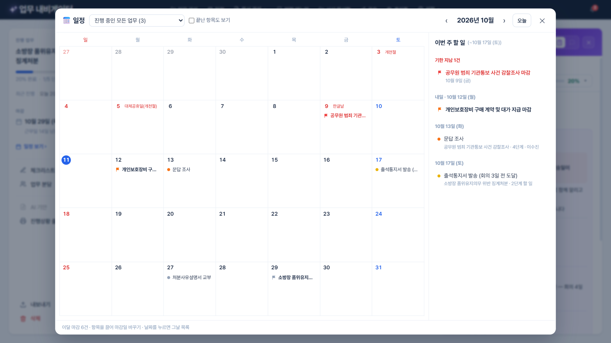
- 왼쪽 마감일 정하기 또는 줄에 마우스를 올리면 나오는 버튼으로 마감일을 정합니다. 예: 출석통지서 발송은 회의일에서 거꾸로 계산해 항목 마감을 잡습니다.
- 일정 보기: 달력에 업무·항목·회신 기한이 표시되고, 오른쪽에 「기한 지남 · 오늘 · 내일 · 이번 주 할 일」이 모입니다.
- 항목을 끌어 다른 날짜에 놓으면 마감일이 바뀝니다. 공휴일도 표시됩니다.
5. 업무 분담과 회신 대기
단계나 할 일을 동료에게 맡기고, 요청 파일을 보내고, 회신 파일을 받아 합칩니다. 서버 없이 파일로 주고받습니다. 맡긴 일은 회신이 올 때까지 화면 곳곳에서 추적됩니다.
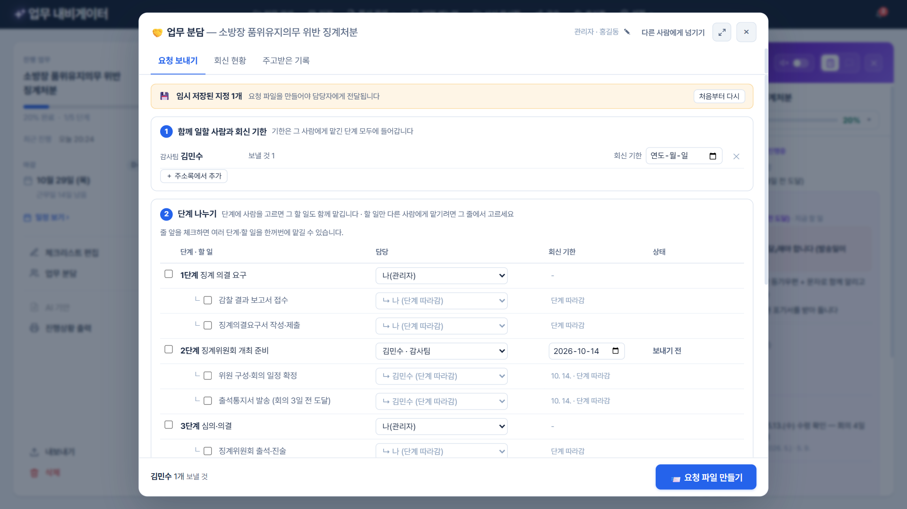
- 왼쪽 [업무 분담]을 누릅니다. 처음 한 번 내 소속·계급·이름을 적습니다.
- ① 함께 일할 사람과 회신 기한 → ② 단계마다 담당을 고릅니다 (단계를 맡기면 그 할 일도 함께).
- [요청 파일 만들기]로 담당자별 파일을 만들어 메신저·메일로 보냅니다.
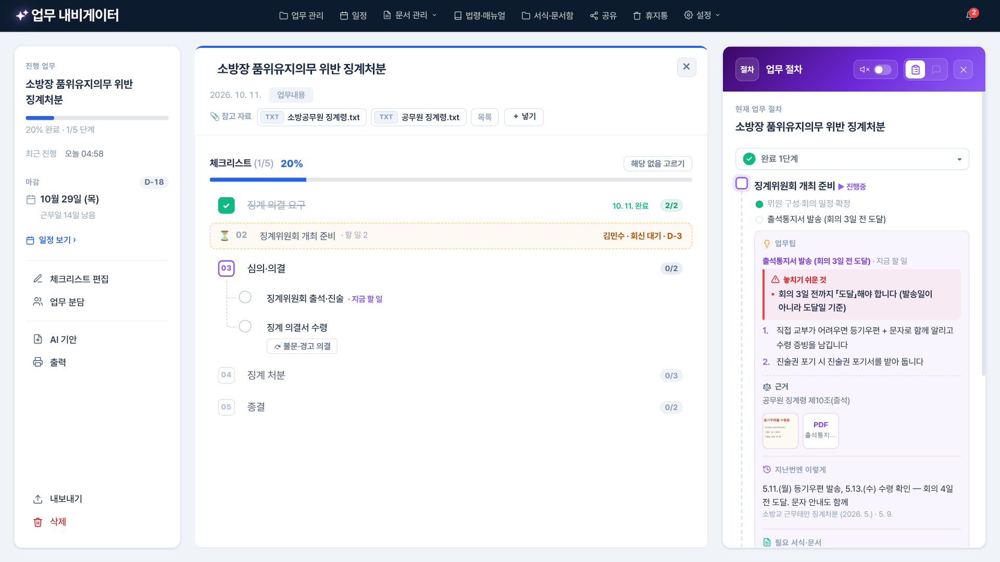
- 보낸 단계는 체크리스트에서 ⏳ 「김민수 · 회신 대기 · D-2」 줄로 바뀝니다. 남이 맡은 일이 내 할 일과 섞이지 않습니다.
- 담당자 쪽: 받은 요청 파일을 [새 업무 만들기 → 업무 가져오기]로 열고 본인 이름을 고릅니다 → 맡은 단계만 체크·조치결과·첨부를 입력합니다(다른 단계는 보기 전용) → 왼쪽 [관리자에게 회신]에서 「아직 진행 중(중간)」 또는 「다 끝났음(최종)」을 골라 [회신 파일 만들기].
- 관리자 쪽: 받은 회신 파일을 [업무 가져오기]로 열면 담당자의 체크·조치결과·첨부가 합쳐지고 「바뀐 곳」 목록이 뜹니다. 같은 회신을 두 번 열어도 한 번만 반영됩니다.
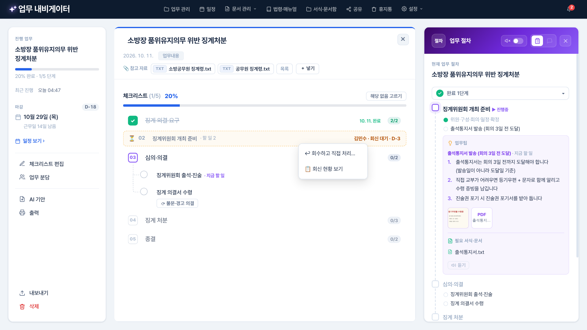
- ⏳ 맡긴 줄을 누르거나 오른쪽 클릭하면 메뉴가 열립니다.
- 회신 대기 줄: 「↩ 회수하고 직접 처리…」 · 「📋 회신 현황 보기」
- 보내기 전 줄: 「↩ 맡기기 취소 (직접 처리)」 · 「✎ 업무 분담에서 고치기」 — 맡기기 취소는 바로 되고, 알림의 [되돌리기]로 되살릴 수 있습니다.
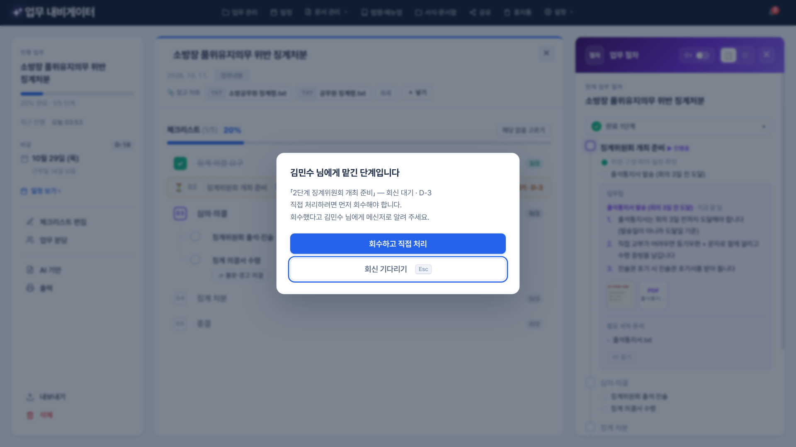
- 회신을 기다리는 줄을 체크하거나 메뉴에서 회수를 고르면 확인 창이 뜹니다. 이미 담당자가 일하고 있을 수 있어 먼저 묻습니다.
- [회수하고 직접 처리] = 회수와 하려던 체크를 한 번에 · [회신 기다리기] = 그대로 두기
- 회수했다고 담당자에게 메신저로 알려 주세요. 회수한 뒤 그 사람이 보낸 회신 파일은 반영되지 않고 「반영할 단계가 없습니다」로 안내됩니다.
- 이미 받은 중간 회신 조치결과는 지우지 않고 남기며, 줄에 「○○ 중간 회신」 표시가 붙습니다.
- 보내기 전(아직 요청 파일을 만들기 전) 줄을 체크하면 묻지 않고 맡기기가 취소되고, 알림의 [되돌리기]로 되살릴 수 있습니다. 할 일 하나만 체크하면 그 할 일만 「나」로 돌아옵니다.
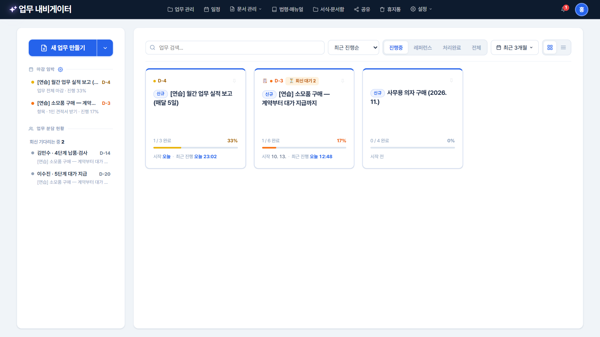
- 메인 화면 왼쪽 업무 분담 현황에 「회신 기다리는 중 2」처럼 모든 업무의 회신 대기가 한곳에 모입니다.
- 「이수진 · 4단계 문답 조사 · D-2」 — 누가, 어느 단계를, 언제까지 회신해야 하는지 보이고, 누르면 그 업무가 열립니다.
- 맨 위 「● 지연된 업무 1건」은 기한이 지난 업무가 있을 때만 나타납니다.
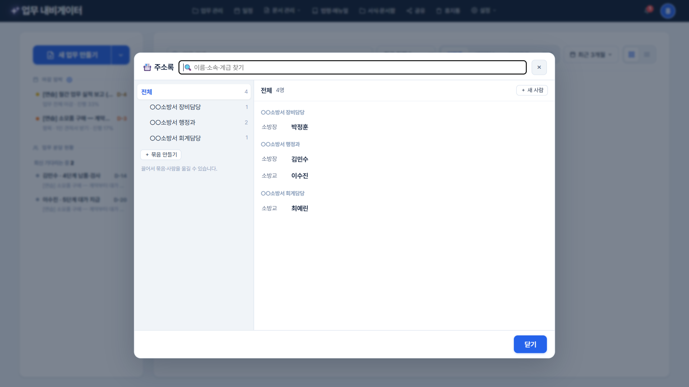
- 자주 함께 일하는 사람을 소속(묶음)별로 저장합니다. 끌어서 묶음을 옮길 수 있습니다.
- 업무 분담에서 [주소록에서 추가]로 바로 고릅니다.
6. 업무 공유
만든 업무를 동료에게 넘기거나 같은 업무를 맡을 후임에게 전합니다.
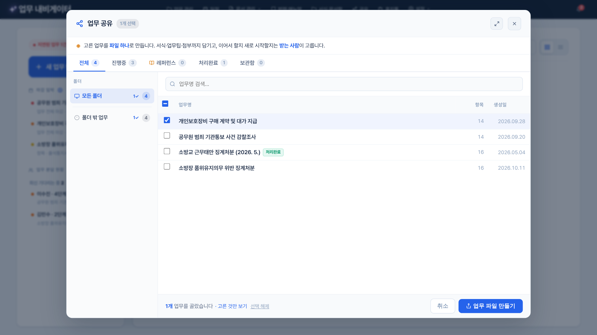
- 맨 위 [공유]를 누르고, 보낼 업무를 체크한 뒤 [업무 파일 만들기]를 누릅니다.
- 서식·업무팁·첨부·참고 자료까지 파일 하나에 담깁니다. 이어서 할지 새로 시작할지는 받는 사람이 고릅니다.
- 받은 사람은 [새 업무 만들기 → 업무 가져오기]로 엽니다.
7. 마무리 — 처리완료 · 레퍼런스 · 보관
끝난 업무는 처리완료로 옮기고, 잘 된 업무는 레퍼런스(본보기)로 등록해 다음에 그대로 다시 씁니다. 오래된 업무는 보관함으로 옮깁니다.
- 회신을 받아 모든 단계가 끝나면 왼쪽 아래에 [완료 처리]가 나타납니다. 맡긴 단계에는 「✓ 김민수」가 남습니다.
- 누르면 「처리완료」 탭으로 옮겨집니다 (완료 취소 가능).
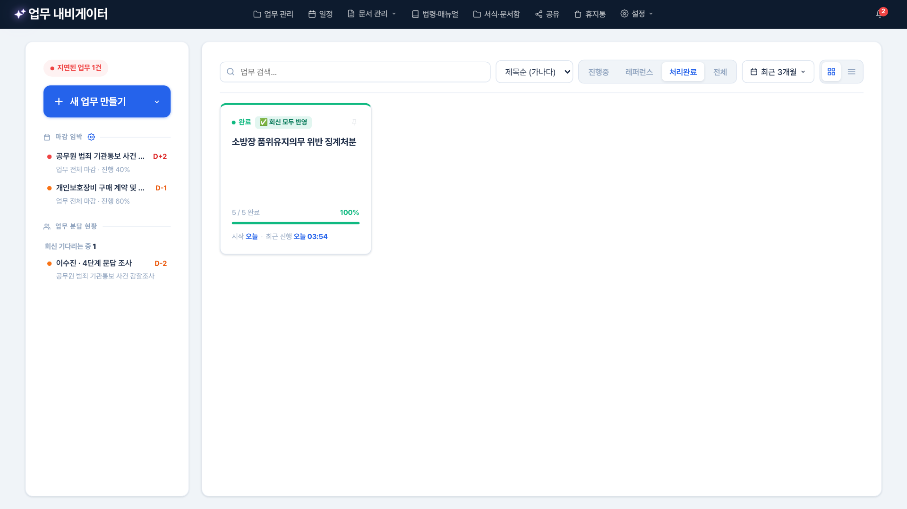
- 메인 화면 처리완료 탭에서 끝낸 업무를 봅니다.
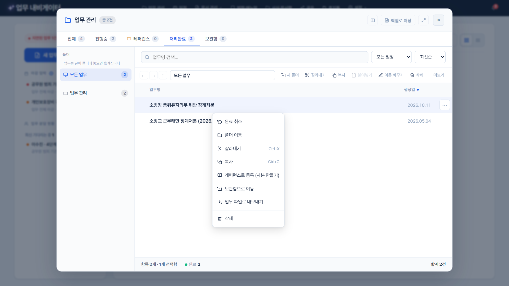
- 업무 관리 창에서 업무를 오른쪽 클릭 → 레퍼런스로 등록 (사본 만들기)
- 체크를 비운 깨끗한 사본이 레퍼런스가 되고, 원래 업무는 처리 기록과 함께 그대로 남습니다.
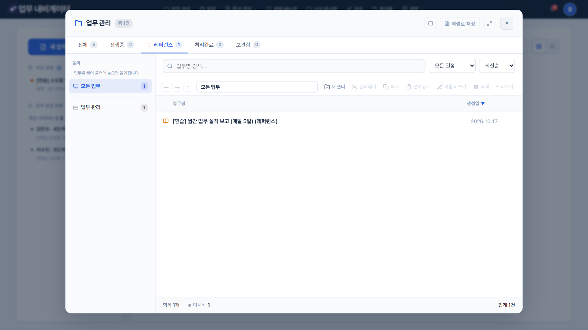
- 레퍼런스는 📖 표시와 함께 레퍼런스 탭에 모입니다. 다음 징계 사건이 오면 레퍼런스를 복사해 절차·업무팁·서식을 그대로 가지고 시작합니다.
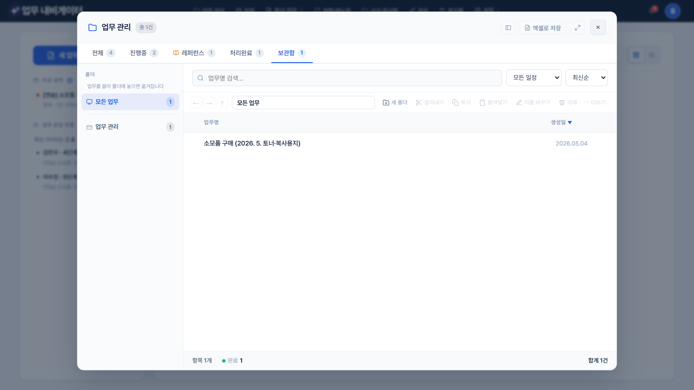
- 오래되었거나 당분간 볼 일이 없는 업무는 보관함으로 이동합니다. 목록에서는 빠지고 보관함 탭에 남습니다.
8. 조직의 자료로 남기기
업무를 폴더로 정리하고, 법령·지침과 서식을 조직 공용 자료함에 모아 모든 업무에서 다시 씁니다.
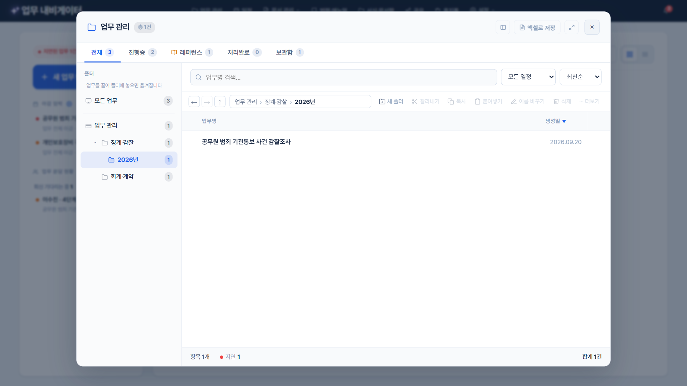
- 윈도우 탐색기와 같습니다: 한 번 클릭 = 고르기, 두 번 클릭 = 열기, 오른쪽 클릭 = 메뉴, 끌어서 옮기기.
- 예: 징계·감찰 / 2026년, 회계·계약 — 폴더 안에 폴더를 단계 제한 없이 만들고 Ctrl+X/C/V로 옮깁니다.
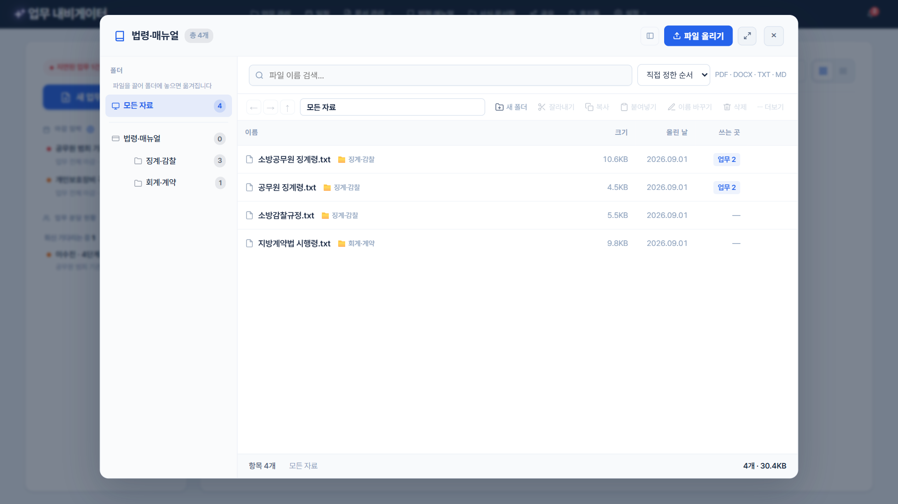
- 법령·지침·매뉴얼을 폴더별로 모읍니다. 쓰는 곳 칸에 이 자료를 참고 자료로 쓰는 업무 수가 보입니다.
- 파일을 창에 끌어다 놓으면 지금 폴더에 저장됩니다.
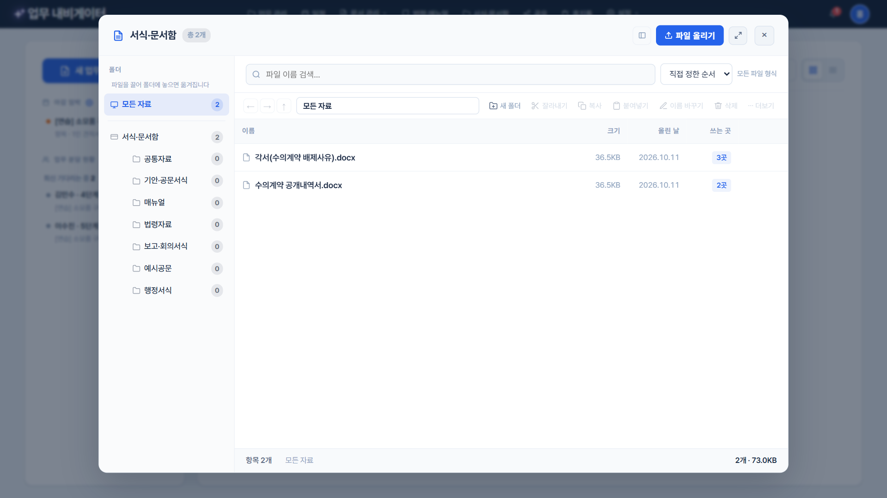
- 기안·보고·행정 서식과 예시 공문을 모읍니다. 체크리스트 항목에 연결해 일할 때 바로 꺼내 씁니다.
9. 안전하게 지키기
지운 업무는 30일 동안 휴지통에 남고, 백업 파일 하나로 모든 자료를 보관하고 되돌립니다.
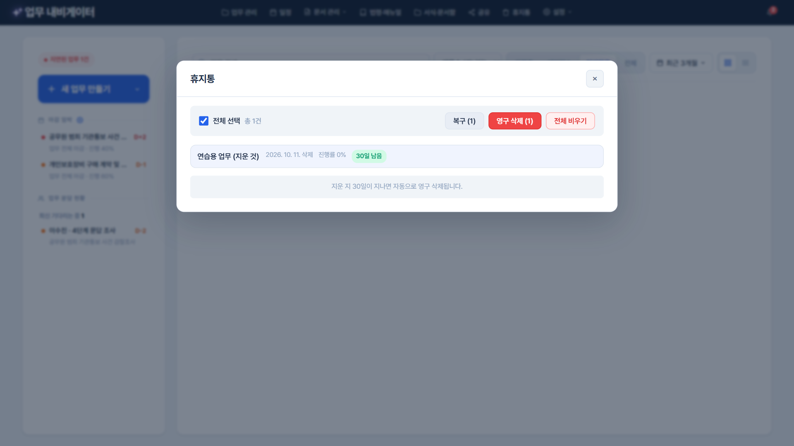
- 지운 업무는 30일 동안 남습니다. 줄을 두 번 누르면 바로 복구됩니다.
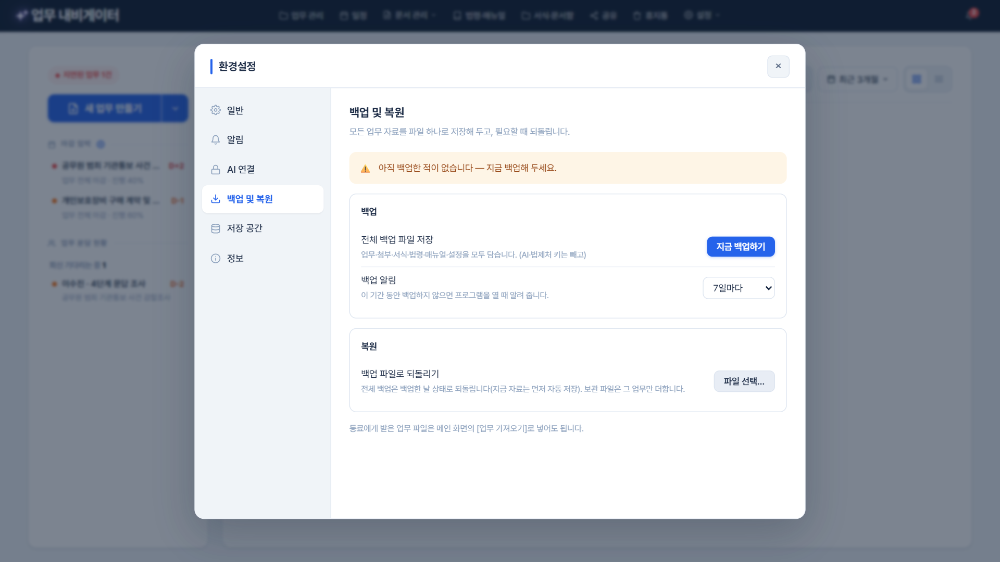
- 설정 → 백업 및 복원 → [지금 백업하기]: 업무·첨부·서식·법령·매뉴얼·설정을 파일 하나로 저장합니다.
- 백업 알림 주기를 정해 두면 잊지 않게 알려 줍니다. PC를 바꿀 때는 백업 파일로 되돌리면 됩니다.
부록 · 마우스와 단축키
일하는 화면
| 한 번 클릭 (줄) | 조치결과 한 줄 입력칸 열기 · 오른쪽 패널에 그 항목 미리 보기 |
|---|---|
| 두 번 클릭 (줄) | 항목 창 |
| 오른쪽 클릭 | 해당 없음·업무팁·서식·마감일 메뉴 |
| Enter (조치결과 칸) | 저장하고 다음 할 일로 |
| Esc | 닫기 |
체크리스트 편집
| 한 번 클릭 | 줄 고르기 (Ctrl·Shift 여러 줄) |
|---|---|
| 두 번 클릭 · F2 · Enter | 이름 바꾸기 |
| 끌기 | 옮기기 |
| Insert | 아래에 새 줄 |
| Alt+Shift+↑↓ | 줄 위치 바꾸기 |
| Tab / Shift+Tab | 할 일로 / 단계로 |
| Delete · Ctrl+X/C/V · Ctrl+Z | 삭제 · 잘라내기·복사·붙여넣기 · 되돌리기 |
업무 관리·법령·서식 창 (탐색기)
| 한 번 / 두 번 클릭 | 고르기 / 열기 |
|---|---|
| Ctrl·Shift·끌어서 고르기 | 여러 개 |
| F2 · Delete | 이름 바꾸기 · 삭제 |
| Ctrl+X/C/V · Ctrl+Z | 잘라내기·복사·붙여넣기 · 되돌리기 |
| Alt+← → ↑ | 뒤로 · 앞으로 · 상위 폴더 |